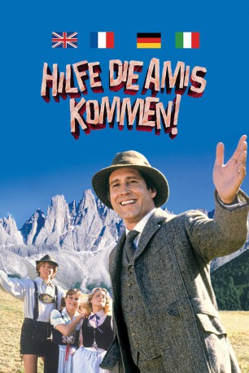

#1692 Hilfe, die Amis kommen
Alternativ: European Vacation
 
 IMDB-Wertung: 6.2 / 10
IMDB-Wertung: 6.2 / 10  Metascore: 47
Metascore: 47 
Als die Griswolds ihre erste Urlaubsreise machten, waren unzählige Kinozuschauer mit dabei – und fielen vor Lachen von den Sitzen! Der nächste, noch abgedrehtere Familientrip führt zu dem Aufschrei “Hilfe, die Amis kommen”. Clark und Ellen sind wieder im Einsatz: Sie haben eine Europareise gewonnen und werden von ihren Kindern Rusty und Audrey begleitet. Luxus-Hotels sind hierbei – nicht inbegriffen. In England übt Clark den Linksverkehr und hinterlässt in Stonehenge ein Trümmerfeld. In Bayern entwickelt sich ein Schuhplattler zur handfesten Keilerei. Ein ausgeflipptes Sommerferien-Roadmovie, bei dem kein Auge trocken und kein Stein auf dem anderen bleibt!
Jahr: 1985
Dauer: 95 Minuten
FSK: 6
Land: USA Studio: Warner Bros.Tonspuren:
Untertitel:
Auflösung: 1080p (1920x1080) Größe: 8140 MB
Genre: Komödie
Regisseur: Amy Heckerling
Drehbuch: John Hughes, John Hughes, Robert Klane
Soundtrack: Charles Fox
Darsteller:
 Chevy Chase als Clark Griswold
Chevy Chase als Clark Griswold Beverly D'Angelo als Ellen Griswold
Beverly D'Angelo als Ellen Griswold- Dana Hill als Audrey Griswold
- Jason Lively als Rusty Griswold
 John Astin als Pig in a Poke Host - Kent
John Astin als Pig in a Poke Host - Kent Paul Bartel als Mr. Froeger
Paul Bartel als Mr. Froeger- Malcolm Danare als The Froeger's Son
 William Zabka als Jack
William Zabka als Jack- Mel Smith als Hotel Manager
 Robbie Coltrane als Man in the Bathroom
Robbie Coltrane als Man in the Bathroom- Maureen Lipman als Lady in the Bed
 Eric Idle als The Bike Rider
Eric Idle als The Bike Rider- Elizabeth Arlen als Mrs. Garland
- Claudia Neidig als Rusty's German Girl
- Moon Unit Zappa als Rusty's California Girl
- Gary Owens als 'Pig in a Poke' Announcer , uncredited
- Sheila Kennedy als Game Show Hostess #1
- Cynthia Szigeti als Mrs. Froeger
- Kevi Kendall als The Froeger's Daughter
- Tricia Lange als Game Show Hostess #2
- Wendy Goldman als Stewardess
- Angus MacKay als Announcer at Court
- Julie Wooldridge als Princess Di
- Peter Hugo als Prince Charles
- Jeannette Charles als Queen Elizabeth
- Derek Deadman als Taxi Driver
- Gwen Nelson als Hotel Manager's Mother
- Paul McDowell als First English Motorist
- Ballard Berkeley als Second English Motorist
- David Gersh als Mr. Garland
 Jacques Herlin als Hotel Desk Clerk
Jacques Herlin als Hotel Desk Clerk- Jacques Maury als Hotel's Assistant Manager
- Philippe Sturbelle als Cafe Waiter
- Alice Sapritch als Dowager on the Eiffel Tower
- Isa Carol Horio als Blond Girl at Eiffel Tower
- Isabelle Massaro als Brunet Girl at Eiffel Tower
- Sylvie Badalati als Rusty's French Girl
- Didier Pain als Video Camera Thief
- Willy Millowitsch als Fritz Spritz
- Erika Wackernagel als Helga Spritz
- Victor Lanoux als The Thief
 Massimo Sarchielli als The Other Thief
Massimo Sarchielli als The Other Thief- Jorge Krimer als Unfortunate Express Agent
- Gloria Charles als Stewardess
 Salvatore Billa als Policeman , uncredited
Salvatore Billa als Policeman , uncredited- Bruno Di Luia als Beret'ed Man in City Square , uncredited
Datei: X:\5-Pentalogie(A-Z)\Griswold\Hilfe, die Amis kommen (1985, FSK, 1920x1080).mkv seit 05.08.2015
Festplatte: HD Collection-3(N-Z)-6(A-Z)
 Es gibt insgesamt 8 Filme in der Gruppe '5-Pentalogie(A-Z)\Griswold'
Es gibt insgesamt 8 Filme in der Gruppe '5-Pentalogie(A-Z)\Griswold'